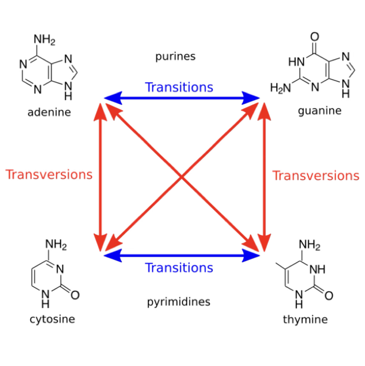

49 Models of DNA Evolution
49.1 Introduction: Why Model DNA Evolution?
The study of molecular evolution requires mathematical frameworks to understand how DNA sequences change over time. When we observe two DNA sequences from different species, we see differences that have accumulated through evolutionary history. However, the observed differences represent only the net result of a complex process involving multiple substitutions, back-mutations, and parallel changes occurring over millions of years. Models of DNA evolution provide the mathematical machinery to infer evolutionary relationships, estimate divergence times, and understand the mechanisms driving genetic change.
Consider two homologous DNA sequences that diverged from a common ancestor. The simple count of differences between them underestimates the true number of substitutions that occurred because some positions may have experienced multiple changes. A position that appears identical in both sequences might have undergone substitution followed by reversion to the original state. Similarly, convergent evolution might cause independent substitutions to the same nucleotide. Models of DNA evolution allow us to account for these hidden substitutions and provide more accurate estimates of evolutionary distances.
The importance of evolutionary models extends far beyond theoretical interest. These models form the foundation for phylogenetic reconstruction, enabling us to infer the tree of life from molecular data. They allow us to date evolutionary events, identify sites under selection, and understand patterns of molecular evolution across genomes. In practical applications, evolutionary models help track viral evolution, predict drug resistance mutations, and identify functionally important genomic regions through comparative analysis.
49.2 The Fundamental Challenge: Multiple Substitutions
The central challenge in modeling DNA evolution lies in accounting for multiple substitutions at the same site. When sequences diverge over long evolutionary periods, the probability increases that any given position experiences more than one substitution. This phenomenon, known as multiple hits or homoplasy, causes the observed sequence divergence to plateau even as evolutionary time continues to increase.
To illustrate this concept, imagine tracking a single nucleotide position over evolutionary time. Starting with adenine (A), it might mutate to guanine (G), then to thymine (T), and finally back to adenine. An observer comparing only the initial and final states would see no change, missing the three substitutions that actually occurred. This saturation effect becomes increasingly important as sequences diverge, making simple similarity measures inadequate for estimating evolutionary distances.
The mathematical framework for handling multiple substitutions involves continuous-time Markov chains. These models treat nucleotide substitution as a stochastic process where the probability of change depends only on the current state, not on the sequence’s history. The Markov property—memorylessness—simplifies the mathematics while capturing the essential features of the substitution process. The models specify instantaneous rates of change between nucleotides, from which we can derive the probabilities of observing particular nucleotide pairs after any amount of evolutionary time.
49.3 A model of DNA evolution
We need a model that decribes the evolution of DNA. If the base at some position in a DNA sequence is \(y \in {A, T, C, G}\), we would like to know the probability that it is \(x \in {A, T, C, G}\) after some time bas passed. This is a complicated task, so let’s break it into simpler steps.
To model how the base at some DNA position changes over time, we need a way to represent the probability that the base is either a \(A\), \(T\), \(G\), or \(C\) at some point in time \(t\). We write those four probabilities as \(p_A(t)\), \(p_T(t)\), \(p_G(t)\), and \(p_C(t)\). We also need the probabilities that one base changes into another in a tiny span of time \(\Delta t\). We call these substitution rates and write the rate of change from base \(x\) into base \(y\) as \(\mu_{xy}\).
Let’s for the sake of argument pretend that we know those probabilities. Then the model DNA evolution we need is one that uses those probabilities to compute, say, \(p_A(t+\Delta t)\), the probability that our base is \(A\) after some tiny bit of extra time \(\Delta t\):
\[ p_A(t+\Delta t) = p_A(t) - p_A(t)\, \mu_{\bullet A} \Delta t + \sum_{x \neq A} p_x(t) \, \mu_{xA} \Delta t \]
where \(\mu_{\bullet A} = \sum_{x \neq A} \mu_{Ax}\) is the total probability that a \(T\), \(G\), \(C\) mutates into an \(A\).
The formula has three terms:
- The probability that the base was \(A\) at time \(t\): \(p_A(t)\)
- The probability that the base was \(A\) at time \(t\), but changed into another base after \(\Delta t\): \(p_A(t)\, \mu_{\bullet A} \Delta t\)
- The probability that the base was not \(A\) but changed into \(A\) after \(\sum_{x \neq A} p_x(t) \, \mu_{xA} \Delta t\)
We can write this equation for each base and merge them into a single equation: \[ \mathbf{p}(t + \Delta t) = \mathbf{p}(t) + \mathbf{p}(t)Q\Delta t \]
where \[ \mathbf{p}(t) = (p_A(t),\ p_C(t),\ p_G(t),\ p_T(t)) \] is a vector of the four probabilities and \(Q\) is a matrix of all the substitution rates:
\[ Q = \begin{pmatrix} -\mu_{\bullet A} & \mu_{AG} & \mu_{AC} & \mu_{AT} \\ \mu_{GA} & -\mu_{\bullet G} & \mu_{GC} & \mu_{GT} \\ \mu_{CA} & \mu_{CG} & -\mu_{\bullet C} &\mu_{CT} \\ \mu_{TA} & \mu_{TG} & \mu_{TC} & -\mu_{\bullet T} \end{pmatrix} \]
49.4 The Jukes-Cantor Model: Simplicity and Symmetry
The Jukes-Cantor (JC69) model, proposed in 1969, represents the simplest mathematical description of DNA evolution. This model assumes that all substitutions occur at the same rate and that all nucleotides have equal equilibrium frequencies. Despite its simplicity, or perhaps because of it, the JC69 model provides fundamental insights into the relationship between observed differences and actual evolutionary distances.
49.4.1 Model Assumptions and Structure
The JC69 model makes several simplifying assumptions: 1. All nucleotides (A, C, G, T) have equal equilibrium frequencies (πA = πC = πG = πT = 0.25) 2. All substitutions occur at the same rate α 3. The substitution process is time-reversible 4. Sites evolve independently 5. The substitution rate is constant over time (molecular clock)
Under the JC69 model, each nucleotide has an equal probability of mutating to any of the three other nucleotides.
\[ \alpha = \frac{1}{4} \times \mu \]
\[ Q = \begin{pmatrix} -3\alpha & \alpha & \alpha & \alpha \\ \alpha & -3\alpha & \alpha & \alpha \\ \alpha & \alpha & -3\alpha & \alpha \\ \alpha & \alpha & \alpha & -3\alpha \end{pmatrix} \]
\[ Q = \begin{pmatrix} -\frac{3\mu}{4} & \frac{\mu}{4} & \frac{\mu}{4} & \frac{\mu}{4} \\ \frac{\mu}{4} & -\frac{3\mu}{4} & \frac{\mu}{4} & \frac{\mu}{4} \\ \frac{\mu}{4} & \frac{\mu}{4} & -\frac{3\mu}{4} & \frac{\mu}{4} \\ \frac{\mu}{4} & \frac{\mu}{4} & \frac{\mu}{4} & -\frac{3\mu}{4} \\ \end{pmatrix} \]
\[ P(t) = \exp(tQ) \]
\[ P = \begin{pmatrix} \frac{1}{4}+\frac{3}{4}e^{-\mu t} & \frac{1}{4}-\frac{1}{4}e^{-\mu t} & \frac{1}{4}-\frac{1}{4}e^{-\mu t} & \frac{1}{4}-\frac{1}{4}e^{-\mu t} \\ \frac{1}{4}-\frac{1}{4}e^{-\mu t} & \frac{1}{4}+\frac{3}{4}e^{-\mu t} & \frac{1}{4}-\frac{1}{4}e^{-\mu t} & \frac{1}{4}-\frac{1}{4}e^{-\mu t} \\ \frac{1}{4}-\frac{1}{4}e^{-\mu t} & \frac{1}{4}-\frac{1}{4}e^{-\mu t} & \frac{1}{4}+\frac{3}{4}e^{-\mu t} & \frac{1}{4}-\frac{1}{4}e^{-\mu t} \\ \frac{1}{4}-\frac{1}{4}e^{-\mu t} & \frac{1}{4}-\frac{1}{4}e^{-\mu t} & \frac{1}{4}-\frac{1}{4}e^{-\mu t} & \frac{1}{4}+\frac{3}{4}e^{-\mu t} \\ \end{pmatrix} \]
\[ \nu = \bigg(\frac{\mu}{4} + \frac{\mu}{4} + \frac{\mu}{4}\bigg)t \implies t\mu = \frac{4}{3}\nu \]
Measuing time in actual mutations, \(\nu\), we get
\[ P_{ij} = \begin{cases} \frac{1}{4}+\frac{3}{4}e^{-\mu t} & \text{if} & i = j \\ \frac{1}{4}-\frac{1}{4}e^{-\mu t} & \text{if} & i \neq j \end{cases} \]
We can estimate the total observed substitution rate, \(p\), as the fraction of base positions that mutated between two sequences:
\[ p = 3\times \bigg(\frac{1}{4} - \frac{1}{4} e^{-4\nu/3} \bigg)= \frac{3}{4} - \frac{3}{4} e^{-4\nu/3} \] —
Now, if we isolate \(\nu\), we get the formula for the Jukes-Cantor correction:
\[ \nu = -\frac{3}{4} \ln(1-\frac{4}{3}p) \]
If we denote the substitution rate as α, then the rate matrix Q describing instantaneous rates of change is:
\[ Q = \begin{pmatrix} -3\alpha & \alpha & \alpha & \alpha \\ \alpha & -3\alpha & \alpha & \alpha \\ \alpha & \alpha & -3\alpha & \alpha \\ \alpha & \alpha & \alpha & -3\alpha \end{pmatrix} \]
The diagonal elements ensure that each row sums to zero, maintaining the property of a rate matrix. The negative diagonal elements represent the rate of leaving each state, while off-diagonal elements represent rates of transition to other states.
49.4.2 Deriving Transition Probabilities
The transition probability matrix P(t), giving the probability that nucleotide i changes to nucleotide j over time t, can be derived by exponentiating the rate matrix:
\[ P(t) = e^{Qt} \]
To solve this, we use the eigenvalue decomposition of Q. The rate matrix Q can be written as:
\[ Q = \alpha \begin{pmatrix} -3 & 1 & 1 & 1 \\ 1 & -3 & 1 & 1 \\ 1 & 1 & -3 & 1 \\ 1 & 1 & 1 & -3 \end{pmatrix} \]
This matrix has two distinct eigenvalues: - λ₁ = 0 (with multiplicity 1) - λ₂ = -4α (with multiplicity 3)
The eigenvector for λ₁ = 0 is (1, 1, 1, 1)ᵀ, representing the equilibrium distribution. The three eigenvectors for λ₂ = -4α span the space orthogonal to the equilibrium.
Using spectral decomposition, we obtain the transition probability matrix:
\[P(t) = \frac{1}{4}\mathbf{1}\mathbf{1}^T + e^{-4\alpha t}\left(I - \frac{1}{4}\mathbf{1}\mathbf{1}^T\right)\]
where 𝟙 is a column vector of ones and I is the identity matrix. This yields the closed-form solutions:
\[P_{ii}(t) = \frac{1}{4} + \frac{3}{4}e^{-4\alpha t}\] \[P_{ij}(t) = \frac{1}{4} - \frac{1}{4}e^{-4\alpha t} \text{ for } i \neq j\]
49.4.3 Worked Example: Computing Transition Probabilities
Let’s work through a concrete example. Suppose α = 0.01 substitutions per site per million years, and we want to know the probabilities after t = 10 million years.
First, calculate the exponent: \[-4\alpha t = -4 \times 0.01 \times 10 = -0.4\]
Then: \[e^{-0.4} \approx 0.6703\]
The probability that a nucleotide remains unchanged: \[P_{ii}(10) = \frac{1}{4} + \frac{3}{4} \times 0.6703 = 0.25 + 0.5027 = 0.7527\]
The probability that a nucleotide changes to any specific other nucleotide: \[P_{ij}(10) = \frac{1}{4} - \frac{1}{4} \times 0.6703 = 0.25 - 0.1676 = 0.0824\]
We can verify our calculation: \[P_{ii} + 3 \times P_{ij} = 0.7527 + 3 \times 0.0824 = 0.7527 + 0.2472 \approx 1.0\]
This means that after 10 million years, there’s approximately a 75% chance a nucleotide remains unchanged and about 8% chance it changes to any specific other nucleotide.
49.4.4 Two-Sequence Divergence
When comparing two sequences that diverged from a common ancestor, we need to consider evolution along both branches. If each branch has evolved for time t, the total evolutionary time is 2t.
For a single site, the probability that both sequences have the same nucleotide is:
\[P_{same} = \sum_{i=A,C,G,T} \pi_i \left[\sum_{j=A,C,G,T} P_{ij}(t) \cdot P_{ij}(t)\right]\]
Given the symmetry of the JC69 model:
\[P_{same} = \frac{1}{4} \times 4 \times \left[P_{ii}^2(t) + 3P_{ij}^2(t)\right]\]
Substituting our expressions:
\[P_{same} = \left(\frac{1}{4} + \frac{3}{4}e^{-4\alpha t}\right)^2 + 3\left(\frac{1}{4} - \frac{1}{4}e^{-4\alpha t}\right)^2\]
After algebraic simplification:
\[P_{same} = \frac{1}{4} + \frac{3}{4}e^{-8\alpha t}\]
Therefore, the probability that sites differ is:
\[p = 1 - P_{same} = \frac{3}{4}(1 - e^{-8\alpha t})\]
49.4.5 Distance Correction Formula
The observed proportion of differences p underestimates the actual number of substitutions due to multiple hits. To correct for this, we solve for the evolutionary distance d = 2αt:
From: \[p = \frac{3}{4}(1 - e^{-\frac{4d}{3}})\]
Solving for d: \[1 - \frac{4p}{3} = e^{-\frac{4d}{3}}\]
Taking the natural logarithm: \[\ln\left(1 - \frac{4p}{3}\right) = -\frac{4d}{3}\]
Therefore: \[d = -\frac{3}{4}\ln\left(1 - \frac{4p}{3}\right)\]
This is the Jukes-Cantor distance correction formula, which estimates the expected number of substitutions per site from the observed proportion of differences.
49.4.6 Numerical Example: Distance Correction
Consider two sequences with the following alignment:
Sequence 1: ATCGATCGATCGATCGATCG (20 nucleotides)
Sequence 2: ATCGTTCCATCGAACGATGG (20 nucleotides)
Differences: * * * * ** (6 differences)The observed proportion of differences: \[p = \frac{6}{20} = 0.30\]
Applying the JC69 correction: \[d = -\frac{3}{4}\ln\left(1 - \frac{4 \times 0.30}{3}\right) = -\frac{3}{4}\ln(1 - 0.40) = -\frac{3}{4}\ln(0.60)\]
\[d = -\frac{3}{4} \times (-0.5108) = 0.3831\]
So while we observe 30% differences, the estimated number of substitutions per site is 0.383, or 38.3%. This 28% increase (from 0.30 to 0.383) accounts for multiple substitutions at the same sites.
49.4.7 Saturation and Model Limitations
As sequences diverge, the observed differences plateau while actual substitutions continue to accumulate. The JC69 model predicts:
- When d = 0.1: p ≈ 0.097 (minimal correction needed)
- When d = 0.5: p ≈ 0.447 (moderate correction)
- When d = 1.0: p ≈ 0.681 (substantial correction)
- When d = 2.0: p ≈ 0.747 (near saturation)
- As d → ∞: p → 0.75 (complete saturation)
The correction formula becomes undefined when p ≥ 0.75, as ln(1 - 4p/3) is undefined for p ≥ 0.75. This represents complete saturation—sequences are no more similar than random.
49.4.8 Properties and Insights
The JC69 model reveals several fundamental properties of neutral evolution:
- Exponential decay: The probability of identity decreases exponentially with time
- Equilibrium convergence: All sequences converge to 25% of each nucleotide
- Reversibility: P(i→j in time t) × πᵢ = P(j→i in time t) × πⱼ
- Saturation: Observable differences plateau at 75% as time increases
- Multiple hits: The correction factor increases dramatically with divergence
These properties make the JC69 model a valuable baseline for understanding molecular evolution, even though its assumptions are oversimplified for real sequences.
49.5 The Kimura Two-Parameter Model: Transitions and Transversions

\[ Q = \begin{pmatrix} -2\beta-\alpha & \beta & \alpha & \beta \\ \beta & -2\beta-\alpha & \beta & \alpha \\ \alpha & \beta & -2\beta-\alpha & \beta \\ \beta & \alpha & \beta & -2\beta-\alpha \end{pmatrix} \]
\(\alpha\): transition rate. \(\beta\): transversion rate.
\[ d_{K2P} = - \frac{1}{2} \ln \big( 1 - 2P - Q\big) - \frac{1}{4} \ln \big( 2Q\big) \]
\(P\) is the fraction of transitions and \(Q\) is the fraction of transversions.
Empirical observations reveal that not all substitutions occur with equal frequency. Transitions (purine to purine or pyrimidine to pyrimidine changes) typically occur more frequently than transversions (purine to pyrimidine or vice versa). The Kimura two-parameter (K80) model, introduced in 1980, incorporates this biological reality while maintaining mathematical tractability.
The K80 model distinguishes between transition rate α and transversion rate β, typically with α > β. The rate matrix becomes:
\[ Q = \begin{pmatrix} -(\alpha + 2\beta) & \beta & \alpha & \beta \\ \beta & -(\alpha + 2\beta) & \beta & \alpha \\ \alpha & \beta & -(\alpha + 2\beta) & \beta \\ \beta & \alpha & \beta & -(\alpha + 2\beta) \end{pmatrix} \]
This structure reflects the chemical basis of mutations. Transitions involve substitutions between chemically similar bases and often result from spontaneous deamination or tautomeric shifts. Transversions require more dramatic chemical changes and occur less frequently. The transition/transversion ratio (κ = α/β) typically ranges from 2 to 10 in nuclear DNA, though it can be higher in mitochondrial sequences.
The transition probability functions for the K80 model are:
\[ P_{ii}(t) = \frac{1}{4} + \frac{1}{4}e^{-4\beta t} + \frac{1}{2}e^{-2(\alpha + \beta)t} \]
\[ _{ij}^{ts}(t) = \frac{1}{4} + \frac{1}{4}e^{-4\beta t} - \frac{1}{2}e^{-2(\alpha + \beta)t} \]
(transitions)
\[ P_{ij}^{tv}(t) = \frac{1}{4} - \frac{1}{4}e^{-4\beta t} \]
(transversions)
These equations reveal how the model captures both fast (transitions) and slow (transversions) evolutionary processes. The presence of two exponential terms reflects the two-parameter nature of the model, with different decay rates for different types of substitutions.
To estimate evolutionary distances under the K80 model, we need to observe both the proportion of transitional differences (S) and transversional differences (V):
\[ d = -\frac{1}{2}\ln(1 - 2S - V) - \frac{1}{4}\ln(1 - 2V) \]
This formula shows how the model uses additional information about substitution types to provide more accurate distance estimates than the JC69 model.
50 Tamuras tre-parameter model
\[ K_{ab} = -C\ln \bigg(1-\frac{S}{C}-V\bigg) - \frac{1}{2}\bigg(1-C\bigg) \ln \bigg(1-2V\bigg) \]
\[ C = \text{GC}_{s1} + \text{GC}_{s2} - 2 \times \text{GC}_{s1} \times \text{GC}_{s2} \]
50.1 The Felsenstein 81 Model: Unequal Base Frequencies
Real DNA sequences rarely exhibit equal frequencies of all four nucleotides. The Felsenstein 81 (F81) model addresses this limitation by allowing unequal equilibrium base frequencies while maintaining equal rates for all substitution types. This model recognizes that compositional biases—such as high GC content in certain genomes—affect substitution patterns.
In the F81 model, the rate of substitution from nucleotide i to nucleotide j is proportional to the equilibrium frequency of j (denoted πⱼ). The rate matrix is:
\[Q_{ij} = \begin{cases} \beta\pi_j & \text{if } i \neq j \\ -\beta(1 - \pi_i) & \text{if } i = j \end{cases}\]
This formulation ensures that the substitution process maintains the specified equilibrium frequencies. The model captures the idea that mutations to common nucleotides occur more frequently than mutations to rare nucleotides, reflecting the underlying mutational processes or selective constraints maintaining compositional biases.
The transition probabilities for the F81 model are:
\[P_{ij}(t) = \begin{cases} \pi_j + (\delta_{ij} - \pi_j)e^{-\beta t} & \text{general form} \\ \pi_j + (1 - \pi_j)e^{-\beta t} & \text{if } i = j \\ \pi_j(1 - e^{-\beta t}) & \text{if } i \neq j \end{cases}\]
where δᵢⱼ is the Kronecker delta (1 if i=j, 0 otherwise). These equations show how sequences evolve toward equilibrium frequencies, with the rate of approach governed by the parameter β.
The F81 model provides insights into how compositional constraints shape molecular evolution. In GC-rich genomes, for example, AT→GC substitutions occur more frequently than GC→AT substitutions, maintaining the compositional bias. This model forms the basis for more complex models that combine unequal base frequencies with other biological features.
50.2 The HKY85 Model: Combining Biological Realism
The Hasegawa-Kishino-Yano (HKY85) model represents a synthesis of the K80 and F81 models, incorporating both transition/transversion bias and unequal base frequencies. This model, proposed in 1985, strikes a balance between biological realism and computational tractability, making it one of the most widely used models in phylogenetic analysis.
The HKY85 rate matrix combines the features of its predecessors:
\[Q_{ij} = \begin{cases} \beta\pi_j & \text{for transversions} \\ \beta\kappa\pi_j & \text{for transitions} \\ -\sum_{k \neq i} Q_{ik} & \text{for } i = j \end{cases}\]
where κ represents the transition/transversion rate ratio. This formulation captures two major features of molecular evolution: the chemical basis of mutations (through κ) and compositional constraints (through π).
The eigenvalue decomposition of the HKY85 rate matrix reveals its mathematical structure. While the general transition probabilities lack simple closed-form expressions, they can be computed efficiently using matrix exponentiation methods. The model has four distinct eigenvalues, reflecting its increased complexity compared to simpler models.
Distance estimation under HKY85 requires numerical methods rather than analytical solutions. Maximum likelihood estimation provides optimal estimates of both evolutionary distances and model parameters (κ and base frequencies). The likelihood function incorporates information from all sites, weighting the contribution of each pattern of nucleotides according to its probability under the model.
The HKY85 model’s success stems from its ability to capture essential features of molecular evolution without excessive parameterization. It accounts for approximately 85% of the variation in substitution patterns observed in real sequences while remaining computationally feasible for large datasets.
50.3 The General Time Reversible Model: Maximum Flexibility
The General Time Reversible (GTR) model represents the most general neutral model of DNA evolution with time reversibility. This model allows all six pairs of nucleotide substitutions to have different rates while maintaining the mathematical property of time reversibility—essential for most phylogenetic methods.
The GTR rate matrix has the form:
\[Q_{ij} = \begin{cases} r_{ij}\pi_j & \text{if } i \neq j \\ -\sum_{k \neq i} Q_{ik} & \text{if } i = j \end{cases}\]
where rᵢⱼ represents the exchangeability parameter between nucleotides i and j (with rᵢⱼ = rⱼᵢ for reversibility), and πⱼ is the equilibrium frequency of nucleotide j. The model has 8 free parameters: 5 exchangeability parameters (the sixth is fixed for identifiability) and 3 base frequencies (the fourth is determined by the constraint that frequencies sum to 1).
Time reversibility means that the probability of observing sequence S₁ at time 0 and S₂ at time t equals the probability of observing S₂ at time 0 and S₁ at time t:
\[\pi_i P_{ij}(t) = \pi_j P_{ji}(t)\]
This property, while biologically questionable (evolution has direction), proves mathematically convenient and appears to have little practical impact on phylogenetic inference for most datasets.
The GTR model encompasses all previously discussed models as special cases: - JC69: all rᵢⱼ = 1, all πᵢ = 0.25 - K80: all πᵢ = 0.25, transitions share one rate, transversions another - F81: all rᵢⱼ = 1, πᵢ estimated from data - HKY85: transitions share one rate, transversions another, πᵢ estimated
This hierarchy of models allows researchers to select appropriate complexity levels through statistical model selection procedures. The Akaike Information Criterion (AIC) or Bayesian Information Criterion (BIC) can identify whether additional parameters significantly improve model fit.
50.4 Rate Heterogeneity: The Gamma Distribution
Real sequences exhibit substantial variation in substitution rates across sites. Some positions evolve rapidly due to weak functional constraints, while others remain nearly invariant due to strong purifying selection. Ignoring rate heterogeneity leads to underestimation of evolutionary distances and incorrect phylogenetic inference.
The gamma distribution provides a flexible framework for modeling rate heterogeneity. If rates across sites follow a gamma distribution with shape parameter α, the probability density function is:
\[f(r) = \frac{\alpha^\alpha}{\Gamma(\alpha)} r^{\alpha-1} e^{-\alpha r}\]
The shape parameter α determines the extent of rate variation: - α < 1: L-shaped distribution with many slowly evolving sites - α = 1: exponential distribution - α > 1: bell-shaped distribution - α → ∞: no rate variation (all sites evolve at the same rate)
Empirical studies typically find α values between 0.1 and 2, indicating substantial rate heterogeneity in most sequences. Low α values (high heterogeneity) are characteristic of functional sequences with many conserved positions.
The continuous gamma distribution is often approximated using discrete categories for computational efficiency. Yang’s discrete gamma model divides sites into k categories (typically 4-8) with equal probabilities, choosing rates to preserve the mean and variance of the continuous distribution. The likelihood calculation then involves summing over all possible rate categories for each site:
\[L = \prod_{i=1}^n \sum_{j=1}^k \frac{1}{k} P(D_i | r_j)\]
where Dᵢ represents the data at site i and rⱼ is the rate for category j.
50.5 Invariant Sites: Accounting for Functional Constraints
Some positions in functional sequences cannot tolerate any substitutions without losing essential function. These invariant sites violate the assumptions of standard models, which predict that all sites should eventually vary given sufficient time. The proportion of invariant sites (pᵢₙᵥ) can be substantial in coding sequences, particularly at first and second codon positions.
The I+G model combines invariant sites with gamma-distributed rates for variable sites:
\[L = p_{inv} L_{inv} + (1 - p_{inv}) L_{\Gamma}\]
where Lᵢₙᵥ is the likelihood of observing no change and L_Γ is the likelihood under the gamma model. This formulation recognizes two classes of conservation: absolute constraint (invariant sites) and strong but not absolute constraint (slowly evolving variable sites).
Parameter estimation in I+G models requires care to avoid identifiability problems. As the gamma shape parameter approaches zero, the gamma distribution places increasing weight on slowly evolving sites, potentially confounding with truly invariant sites. Maximum likelihood estimation must navigate this parameter correlation carefully.
50.6 Codon Models: The Genetic Code’s Influence
When analyzing protein-coding sequences, nucleotide substitution models ignore the genetic code’s structure. Codon models explicitly incorporate the relationship between DNA changes and amino acid replacements, providing more biologically realistic descriptions of coding sequence evolution.
The Muse-Gaut and Goldman-Yang models represent two major approaches to codon modeling. Both distinguish between synonymous substitutions (not changing the amino acid) and non-synonymous substitutions (changing the amino acid), but differ in their parameterization.
The Goldman-Yang model parameterizes rates as:
\[q_{ij} \propto \begin{cases} \pi_j & \text{for synonymous transversions} \\ \kappa\pi_j & \text{for synonymous transitions} \\ \omega\pi_j & \text{for non-synonymous transversions} \\ \omega\kappa\pi_j & \text{for non-synonymous transitions} \\ 0 & \text{for multiple nucleotide changes} \end{cases}\]
where ω = dN/dS represents the ratio of non-synonymous to synonymous substitution rates. This ratio provides information about selection: - ω < 1: purifying selection (most amino acid changes are deleterious) - ω = 1: neutral evolution - ω > 1: positive selection (amino acid changes are advantageous)
Codon models can detect positive selection even when it affects only a small proportion of sites, making them powerful tools for identifying functionally important regions and adaptive evolution.
50.7 Context-Dependent Evolution: Beyond Independence
Standard models assume that sites evolve independently, but real sequences exhibit context-dependent substitution patterns. The most striking example is the CpG dinucleotide in vertebrate genomes. Methylated cytosines in CpG contexts spontaneously deaminate to thymine at elevated rates, causing CpG depletion except in unmethylated CpG islands.
Context-dependent models explicitly incorporate neighbor effects:
\[Q_{ij|context} = f(i, j, \text{neighboring bases})\]
These models can capture: - CpG effects: elevated C→T rates in CpG contexts - Codon position effects: different rates at three codon positions - RNA structure: compensatory substitutions maintaining base pairs - Protein structure: correlated changes maintaining interactions
While context-dependent models provide more realistic descriptions of sequence evolution, they require substantially more parameters and computational resources. The trade-off between model realism and practical applicability remains an active area of research.
50.8 Model Selection: Choosing Appropriate Complexity
With numerous models available, selecting appropriate complexity for specific datasets becomes crucial. Overly simple models miss important evolutionary features, while overly complex models overfit data and provide unreliable estimates.
Statistical model selection uses information criteria balancing fit and complexity:
Akaike Information Criterion (AIC): \[AIC = -2\ln L + 2k\]
Bayesian Information Criterion (BIC): \[BIC = -2\ln L + k\ln n\]
where L is the maximum likelihood, k is the number of parameters, and n is the sample size. Lower values indicate better models, with penalties for additional parameters preventing overfitting.
Likelihood ratio tests provide statistical assessment when models are nested: \[LRT = 2(\ln L_{complex} - \ln L_{simple})\]
Under the null hypothesis (simple model adequate), LRT follows a chi-square distribution with degrees of freedom equal to the parameter difference.
Hierarchical likelihood ratio tests can systematically evaluate model features: 1. Test base frequency equality (JC69 vs F81) 2. Test transition/transversion equality (F81 vs HKY85) 3. Test rate homogeneity (HKY85 vs HKY85+G) 4. Test for invariant sites (HKY85+G vs HKY85+I+G)
This systematic approach identifies necessary model features while avoiding unnecessary complexity.
50.9 Practical Applications: From Theory to Practice
Evolutionary models enable diverse applications in biology and medicine:
Phylogenetic Reconstruction: Models provide the statistical framework for inferring evolutionary relationships. Maximum likelihood and Bayesian methods use substitution models to evaluate alternative trees, identifying those best explaining observed sequences. Accurate models are essential for resolving difficult phylogenetic questions, such as rapid radiations or ancient divergences.
Molecular Dating: By relating sequence divergence to time, models enable estimation of divergence times. The molecular clock hypothesis—constant substitution rates over time—provides the simplest framework, though relaxed clock models accommodate rate variation among lineages. Calibration using fossil evidence or geological events converts genetic distances to absolute times.
Positive Selection Detection: Codon models identify genes and sites under positive selection by comparing non-synonymous and synonymous substitution rates. This approach has revealed adaptive evolution in immune system genes, reproductive proteins, and host-pathogen interactions. Site-specific models can pinpoint individual amino acids under selection, guiding functional studies.
Ancestral Sequence Reconstruction: Models enable probabilistic reconstruction of ancestral sequences at internal tree nodes. This approach has been used to resurrect ancient proteins, study evolutionary trajectories, and understand the origins of novel functions. The accuracy of reconstruction depends critically on model appropriateness.
Epidemiological Tracking: Fast-evolving viruses like influenza and HIV require sophisticated models accounting for rapid evolution and strong selection. Real-time phylogenetics tracks viral spread, identifies transmission chains, and predicts future evolution. Model-based analyses inform public health decisions and vaccine design.
50.10 Limitations and Future Directions
Despite their utility, current models have important limitations:
Stationarity Assumption: Most models assume constant nucleotide frequencies over time, but compositional evolution occurs in many lineages. Non-stationary models allowing frequency changes are computationally challenging but necessary for some datasets.
Site Independence: The assumption that sites evolve independently ignores structural and functional constraints creating correlated evolution. Incorporating dependency requires exponentially more parameters, limiting practical applications.
Selection Modeling: Most models assume neutral evolution or simple selection schemes. Real selection varies across sites, through time, and among lineages in complex ways not captured by current models.
Insertion-Deletion Evolution: Standard substitution models ignore insertions and deletions (indels), though these contribute substantially to sequence divergence. Integrated models of substitution and indel evolution remain computationally challenging.
Future developments will likely focus on: - Machine learning approaches to model selection and parameter estimation - Integration of structural and functional information - Improved computational methods for complex models - Models tailored to specific biological questions - Real-time phylogenetics for pathogen surveillance
50.11 Conclusion
Models of DNA evolution provide the mathematical foundation for understanding how genetic sequences change over time. From the simple elegance of the Jukes-Cantor model to the biological realism of context-dependent models, this framework enables us to extract evolutionary information from sequence data.
The progression from simple to complex models reflects our growing understanding of molecular evolution’s intricacies. Each model captures different aspects of the substitution process: equal rates (JC69), transition/transversion bias (K80), compositional constraints (F81), combined features (HKY85, GTR), rate heterogeneity (gamma), functional constraints (invariant sites), and the genetic code (codon models).
Model selection remains crucial for balancing biological realism with statistical reliability. Overly simple models miss important evolutionary features, while overly complex models overfit limited data. Information criteria and likelihood ratio tests guide appropriate model choice for specific datasets and questions.
The practical impact of evolutionary models extends throughout biology and medicine. They enable phylogenetic reconstruction, molecular dating, selection detection, ancestral reconstruction, and epidemiological tracking. As sequencing technologies generate ever-larger datasets and computational methods advance, evolutionary models will continue evolving to meet new challenges.
Understanding these models—their assumptions, strengths, and limitations—is essential for anyone working with molecular sequence data. They transform raw sequence comparisons into evolutionary insights, revealing the historical processes that shaped the diversity of life. As we develop more sophisticated models capturing additional biological realism, we deepen our understanding of molecular evolution and enhance our ability to use genomic data for practical applications.
The future of evolutionary modeling lies in integrating multiple data types, incorporating structural and functional constraints, and developing computationally efficient methods for increasingly complex models. These advances will enable more accurate phylogenetic inference, better understanding of adaptive evolution, and improved predictions for medical and biotechnological applications. The mathematical frameworks developed for modeling DNA evolution will continue to evolve, driven by biological discoveries and computational innovations, maintaining their central role in understanding life’s molecular history.